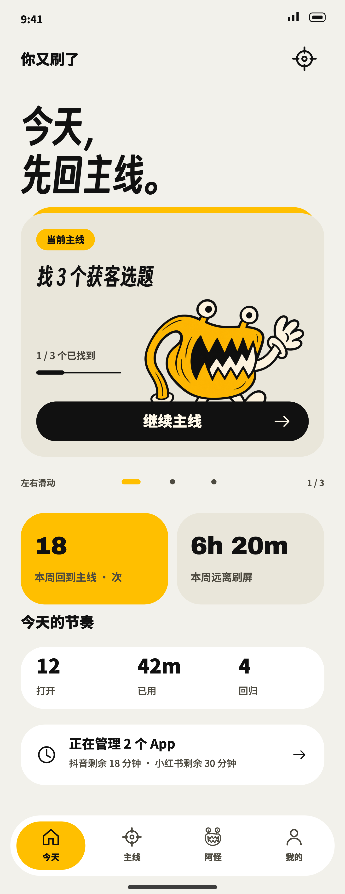
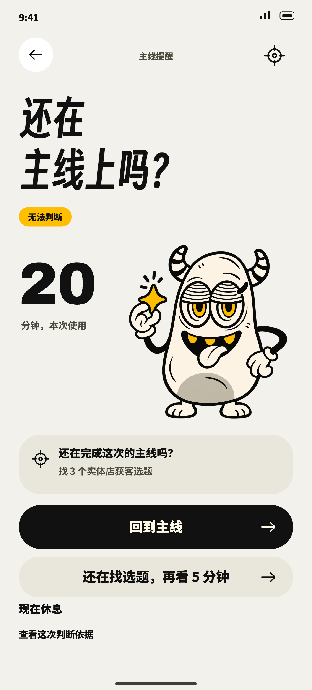
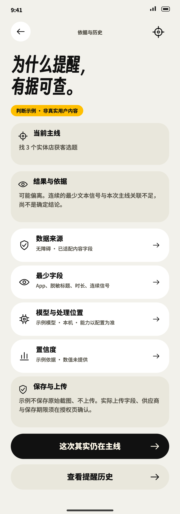

新人一步一步
不要跳步。尤其先接大模型，再开「内容偏离」判断；主线要建好，提醒才有对象。
-

-
第 2 步
接大模型（最重要）
我的 → 模型与渠道
选一个渠道（如 DeepSeek / OpenAI 兼容），填入 API Key，保存。先做一次连接检查或样例测试。没有 Key 也能用时间规则，但离题提醒会弱。

-
第 3 步
开权限与内容识别
系统设置 → 无障碍 · 我的 → 设备能力 · 我的 → 悬浮窗与通知
① 系统里开启「你又刷了」无障碍。② App 内打开内容识别（接好模型后再开）。③ 建议开悬浮窗，否则提醒会降级到通知栏。

-
第 4 步
建一条主线
今天 → 主线 → 新建
点范围库四模板之一（或自己写范围），填清楚「这次要完成什么」。设预计时长（时间盒）；用尽后主页会提示收束，不再做内容弹窗。

-
第 5 步
刷 feed 怎么介入（可先不改默认）
我的 → 主线介入 · 刷 feed
默认前 10 分钟不打扰，抖音 / 小红书 / 视频号合并一段刷。微信聊天不算刷类。想先感受弹窗可把静默改短做测试。

-
第 6 步
确认浮窗长什么样
我的 → 悬浮窗与通知 → 显示一条测试小浮窗
应看到「还在这次主线上吗？」和再看 5 / 10 / 20 分钟。然后去抖音试刷；离题时才应弹（静默期内不弹）。

内测建议核对
| 项 | 预期 |
|---|---|
| 模型 | 连接成功后再开内容识别 |
| 浮窗四角 | 测试小浮窗白卡四角干净 |
| 前 10 分钟 | 抖音 + 小红书合并静默 |
| 微信 | 聊天不介入；视频号才可能 |
界面速览
三列对照，与上面步骤同一套中文浅色界面。
